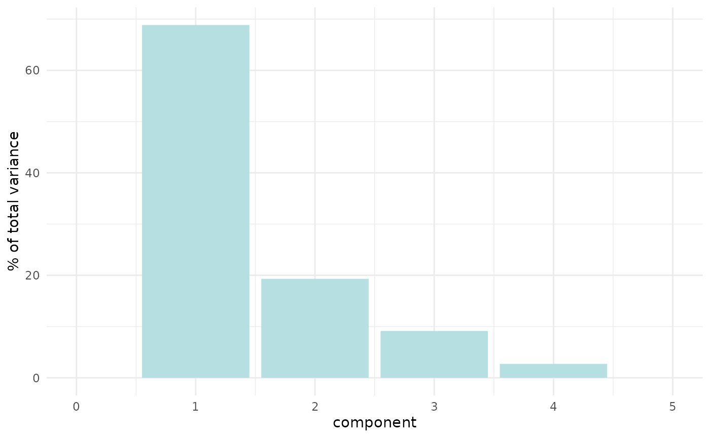
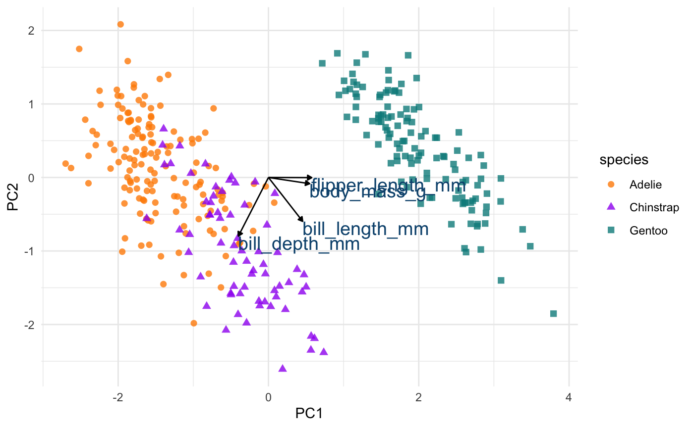
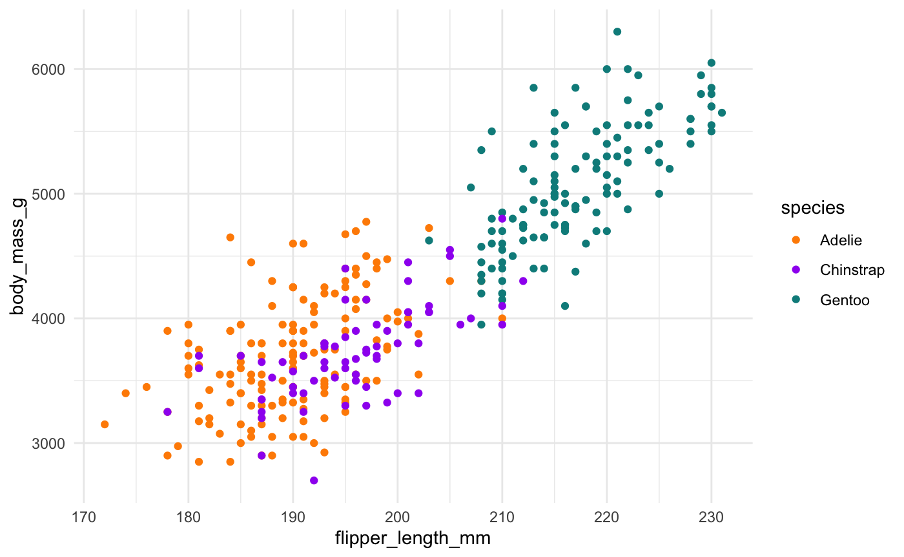
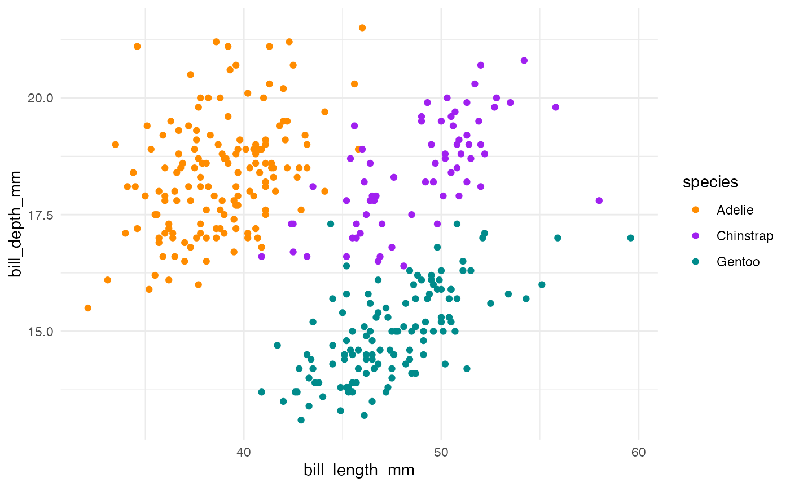
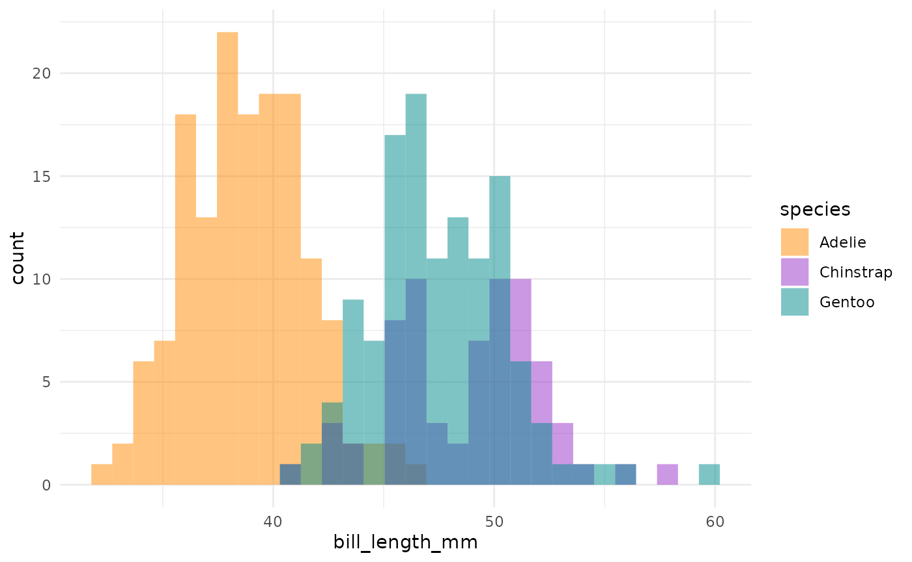
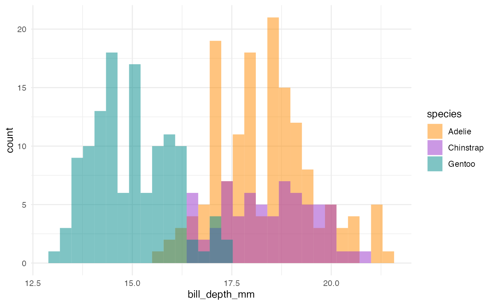

You’ll need these packages to follow along with the code in this article locally:
library(palmerpenguins) library(corrr) library(GGally) library(recipes) library(tidytext) library(dplyr) library(tidyr) library(ggplot2) theme_set(theme_minimal())
Correlation matrix
The palmerpenguins::penguins data contains several size measurement variables that are correlated. Let’s take a look at the correlation matrix with the corrr package and the corrr::correlate() function:
library(corrr) penguins_corr <- penguins %>% dplyr::select(where(is.numeric)) %>% correlate() %>% rearrange() penguins_corr
#> # A tibble: 4 x 5
#> rowname flipper_length_mm body_mass_g bill_length_mm bill_depth_mm
#> <chr> <dbl> <dbl> <dbl> <dbl>
#> 1 flipper_length_mm NA 0.871 0.656 -0.584
#> 2 body_mass_g 0.871 NA 0.595 -0.472
#> 3 bill_length_mm 0.656 0.595 NA -0.235
#> 4 bill_depth_mm -0.584 -0.472 -0.235 NA Body mass and flipper length appear highly correlated, but neither of the bill variables appears to be as highly correlated with any other variables.
Pairwise plot matrix
We can visualize these correlations with the GGally package. The function we’ll use is called GGally::ggpairs().
penguins %>% select(species, where(is.numeric)) %>% GGally::ggpairs(aes(color = species), columns = c("flipper_length_mm", "body_mass_g", "bill_length_mm", "bill_depth_mm")) + scale_colour_manual(values = c("darkorange","purple","cyan4")) + scale_fill_manual(values = c("darkorange","purple","cyan4"))

Principal component analysis (PCA)
We’ll use the recipes package from tidymodels to perform a principal component analysis (PCA).
First, we’ll also use a few recipe steps to preprocess the data for PCA; namely, we need to:
- remove any
NAvalues, - center all predictors, and
- scale all predictors.
If you’ve never used the recipes package before, try this article to get started.
library(recipes) penguin_recipe <- recipe(~., data = penguins) %>% update_role(species, island, sex, new_role = "id") %>% step_naomit(all_predictors()) %>% step_normalize(all_predictors()) %>% step_pca(all_predictors(), id = "pca") %>% prep() penguin_pca <- penguin_recipe %>% tidy(id = "pca") penguin_pca
#> # A tibble: 16 x 4
#> terms value component id
#> <chr> <dbl> <chr> <chr>
#> 1 bill_length_mm 0.455 PC1 pca
#> 2 bill_depth_mm -0.400 PC1 pca
#> 3 flipper_length_mm 0.576 PC1 pca
#> 4 body_mass_g 0.548 PC1 pca
#> 5 bill_length_mm -0.597 PC2 pca
#> 6 bill_depth_mm -0.798 PC2 pca
#> 7 flipper_length_mm -0.00228 PC2 pca
#> 8 body_mass_g -0.0844 PC2 pca
#> 9 bill_length_mm -0.644 PC3 pca
#> 10 bill_depth_mm 0.418 PC3 pca
#> 11 flipper_length_mm 0.232 PC3 pca
#> 12 body_mass_g 0.597 PC3 pca
#> 13 bill_length_mm 0.146 PC4 pca
#> 14 bill_depth_mm -0.168 PC4 pca
#> 15 flipper_length_mm -0.784 PC4 pca
#> 16 body_mass_g 0.580 PC4 pcaThe value column here is the loading. For each component, the value tells us the linear combination of weights for each variable that contributes to that component.
This output is a tidy version of this using stats::prcomp():
penguins %>% dplyr::select(where(is.numeric)) %>% tidyr::drop_na() %>% scale() %>% prcomp() %>% .$rotation
#> PC1 PC2 PC3 PC4
#> bill_length_mm 0.4552503 -0.597031143 -0.6443012 0.1455231
#> bill_depth_mm -0.4003347 -0.797766572 0.4184272 -0.1679860
#> flipper_length_mm 0.5760133 -0.002282201 0.2320840 -0.7837987
#> body_mass_g 0.5483502 -0.084362920 0.5966001 0.5798821We can also apply the recipes::tidy() method to the output from recipes::step_pca() to examine how much variance each component accounts for:
penguin_recipe %>% tidy(id = "pca", type = "variance") %>% dplyr::filter(terms == "percent variance") %>% ggplot(aes(x = component, y = value)) + geom_col(fill = "#b6dfe2") + xlim(c(0, 5)) + ylab("% of total variance")

Plot PCA loadings
We can plot these loadings by principal component too, following Julia Silge’s example:
library(ggplot2) penguin_pca %>% mutate(terms = tidytext::reorder_within(terms, abs(value), component)) %>% ggplot(aes(abs(value), terms, fill = value > 0)) + geom_col() + facet_wrap(~component, scales = "free_y") + tidytext::scale_y_reordered() + scale_fill_manual(values = c("#b6dfe2", "#0A537D")) + labs( x = "Absolute value of contribution", y = NULL, fill = "Positive?" )

Plot PCA loadings + scores
We have the PCA loadings in penguin_pca. But we need them in a wide format now for plotting.
# get pca loadings into wider format pca_wider <- penguin_pca %>% tidyr::pivot_wider(names_from = component, id_cols = terms)
We also need to go back to our prepped penguin recipe, prepped_penguins, and recipes::juice() it to get the PCA scores back.
# define arrow style arrow_style <- arrow(length = unit(.05, "inches"), type = "closed") pca_plot <- juice(penguin_recipe) %>% ggplot(aes(PC1, PC2)) + geom_point(aes(color = species, shape = species), alpha = 0.8, size = 2) + scale_colour_manual(values = c("darkorange","purple","cyan4")) pca_plot + geom_segment(data = pca_wider, aes(xend = PC1, yend = PC2), x = 0, y = 0, arrow = arrow_style) + geom_text(data = pca_wider, aes(x = PC1, y = PC2, label = terms), hjust = 0, vjust = 1, size = 5, color = '#0A537D')

In the above plot, you can see a lot!
First, if you focus on the x-axis showing us the first principal component, you can see that flipper length and body mass are very important (confirming what we saw in the above bar chart). Along this dimension, Gentoo penguins stand out clearly from the other two species. We can confirm this looking at summary statistics:
penguins %>% group_by(species) %>% summarize(across(c(flipper_length_mm, body_mass_g), mean, na.rm = TRUE))
#> # A tibble: 3 x 3
#> species flipper_length_mm body_mass_g
#> <fct> <dbl> <dbl>
#> 1 Adelie 190. 3701.
#> 2 Chinstrap 196. 3733.
#> 3 Gentoo 217. 5076.We can see this with a simple scatterplot:
ggplot(penguins, aes(x = flipper_length_mm, y = body_mass_g, colour = species)) + geom_point() + scale_colour_manual(values = c("darkorange","purple","cyan4"))

If you now focus more on the y-axis showing us the second principal component, you can see that our two bill size variables, bill_length_mm and bill_depth_mm, are very important (again, confirming what we saw in the above bar chart).
Let’s do the same thing for principal component 2 and 3.
pca_plot %+% aes(PC2, PC3) + geom_segment(data = pca_wider, aes(xend = PC2, yend = PC3), x = 0, y = 0, arrow = arrow_style) + geom_text(data = pca_wider, aes(x = PC2, y = PC3, label = terms), hjust = 0, vjust = 1, size = 5, color = '#0A537D')

We see again that PC2 seems most associated with our bill size variables, bill_length_mm and bill_depth_mm. But now we can see more clearly that this dimension seems to separate Chinstrap penguins from the other two species. We can confirm this by glancing at summary statistics again by species:
penguins %>% group_by(species) %>% summarize(across(c(bill_depth_mm, bill_length_mm), mean, na.rm = TRUE))
#> # A tibble: 3 x 3
#> species bill_depth_mm bill_length_mm
#> <fct> <dbl> <dbl>
#> 1 Adelie 18.3 38.8
#> 2 Chinstrap 18.4 48.8
#> 3 Gentoo 15.0 47.5We can see this with a simple scatterplot too:
ggplot(penguins, aes(x = bill_length_mm, y = bill_depth_mm, colour = species)) + geom_point() + scale_colour_manual(values = c("darkorange","purple","cyan4"))

This is actually a pretty neat scatterplot—it highlights a perfect example of why you’d need the combination of two variables to differentiate between these three species. Comparing distributions for any single variable only differentiates one species from the other two!1

Summary
So, Gentoos appear to just be giants, compared to the Adelie and Chinstrap penguins. While Adelie and Chinstraps are similar size-wise as measured by flipper length and body mass, Chinstraps seem to have longer bills and Adelie penguins have stubbier bills (a pug-gein, if you will?). And Gentoos, despite being large overall, have flatter bills than either of the other two species. Reminder:

Other PCA resources
- Michael Friendly’s multivariate palmerpenguins analysis
- Julia Silge’s PCA and UMAP with tidymodels and #TidyTuesday cocktail recipes
this is also a great example Simpson’s paradox, see
vignette("examples")↩︎